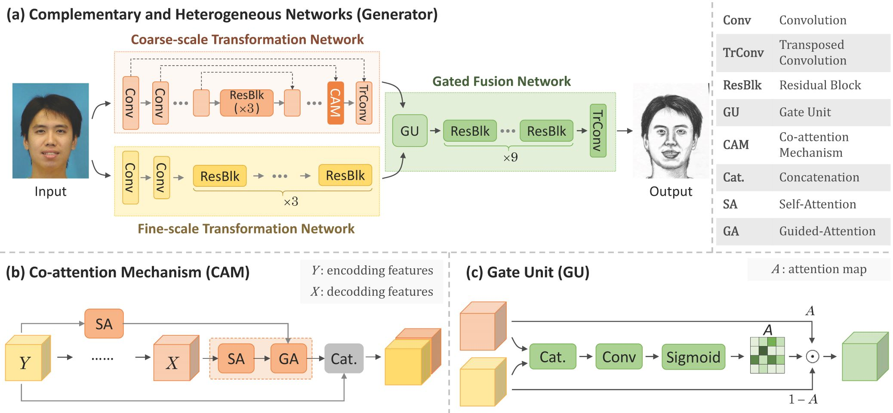
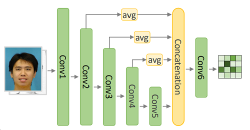
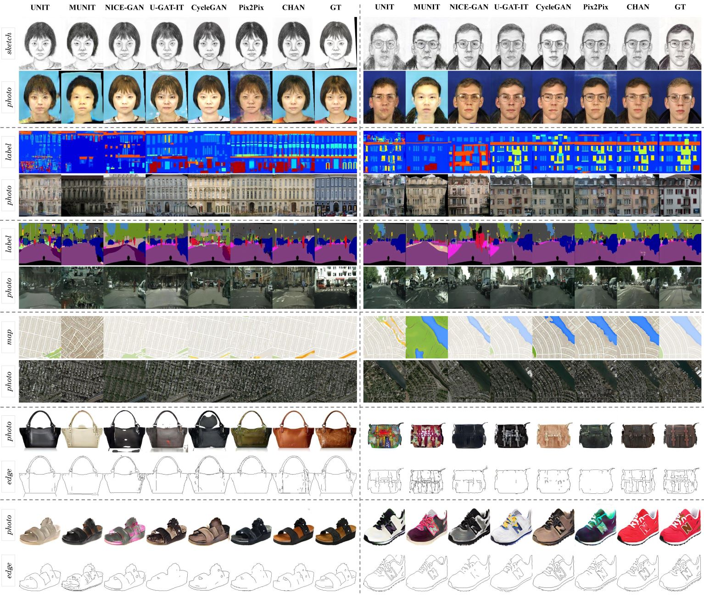
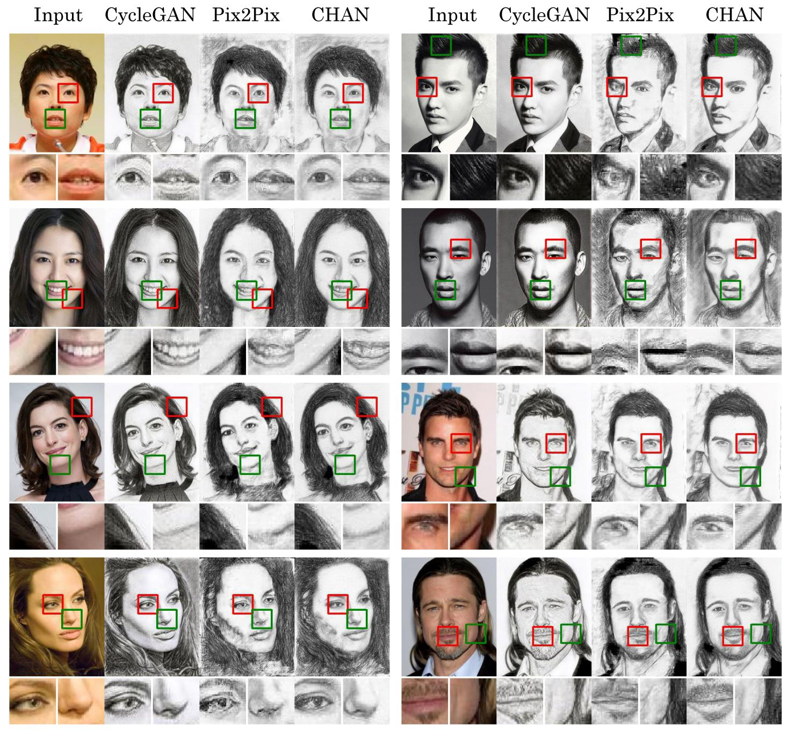

Complementary, Heterogeneous and Adversarial Networks for Image-to-Image Translation (CHAN)
Published in March 1, 2021
Recommended citation: https://ieeexplore.ieee.org/document/9366371
Our Proposed Framework
Generator

Discriminator (Multi-layer Integration Discriminator, MID)

Generated Examples



Prerequisites
- Linux or similar environment
- Python 2.7
- NVIDIA GPU + CUDA CuDNN
Getting Started
installation
- clone this repo:
```shell script git clone https://github.com/fei-hdu/chan.git cd chan
- install PyTorch 0.4+
### Quick Start
- Download a dataset
- [CUFS](http://mmlab.ie.cuhk.edu.hk/archive/facesketch.html) splits of training and testing: [files](https://drive.google.com/open?id=1TYQ5O9q4ZMiuBimPMqqj7O_SyHoijwmn)
- CityScapes, Facades, Google Map, Edge2Shoes, Edge2Handbags: [Pix2Pix bash](https://github.com/phillipi/pix2pix/blob/master/datasets/download_dataset.sh)
<!--
- We use fine-tuning to train our model. For example, on the CUFS
- first you need train on Pix2Pix to get a coarse model or you can Download a pre-trained model(pre-trained with [Pix2Pix](https://github.com/jehovahxu/pix2pix-pytorch)) in [here](https://drive.google.com/open?id=1dfe2pqAUD4T6fD9vO38SM2HCYJSe9Nxj)
-->
- Train:
```shell script
python train.py --dataroot {dataset path} --datalist {datalist path} --pre_netG {coarse model path} --gpuid {your gpu ids}
- Test:
shell script python test.py --dataroot {dataset path} --datalist {datalist path} --pre_netG {final model path} --gpuid {your gpu ids}
Apply our pre-trained model
A face photo-to-sketch model pre-trained on the CUSF dataset: Google Drive
The pre-trained model need to be save at ./checkpoint
Then you can test this imodel.
Results
Our final results can be downloaded here
Our Quantitative performance in a variety of image-to-image translation tasks are shown below. We assign a score of +1, 0, or -1 to the best, mediate, and worst model according to each performance index. For each method, the total score on each dataset and that across all these datasets, are reported.

Training/Test Tips
Best practice for training and testing your models. Feel free to ask any questions about coding. Xingxin Xu, jehovahxu@gmail.com
Citation
If you find this useful for your research, please cite our paper as:
Fei Gao, Xingxin Xu, Jun Yu, Meimei Shang, Xiang Li, and Dacheng Tao, Complementary, Heterogeneous and Adversarial Networks for Image-to-Image Translation, IEEE Transactions on Image Processing, 2021. (Accepted)
@article{gao2021chan,
title = {Complementary, Heterogeneous and Adversarial Networks for Image-to-Image Translation},
author = {Fei Gao and Xingxin Xu and Jun Yu and Meimei Shang and Xiang Li and Dacheng Tao},
journal = {IEEE Transactions on Image Processing},
year = {2021},
url = {https://github.com/fei-hdu/chan},
}
Acknowledgments
Our code is inspired by pytorch-CycleGAN-and-pix2pix